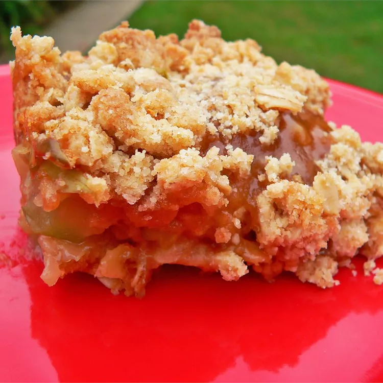

Home
Caramel Apple Bars

Ingredients
- 2 1/2 cups all purpose flour
- 2 cups quick cooking oats
- 1 1/2 cups packed brown sugar
- 1 teaspoon baking soda
- 1 1/4 cups butter, melted
- 2 cups apple, peeled, cored, and sliced
- 1 1/2 cups caramel topping
Steps
- Preheat the oven to 350 degrees. Grease a 15x10 inch jellyroll pan
- To make the crust: Combine 2 cups of flour, quick cooking oats, brown sugar, and baking soda in a large bowl. Stir in butter and mix until crumbly
- Press half of the mixture into the prepared baking pan. Bake for 8 minutes
- To make caramel filling combine caramel topping and remaining 1/2 cup of flour in a small pan over medium heat. Bring to a boil and stir consistently for 3 to 5 minutes
- Spread apples evenly over the baked crust.Pour caramel filling over the apple layer. Add remaining crust over the top of everything. Bake for 20-25 minutes
- Let cool before serving